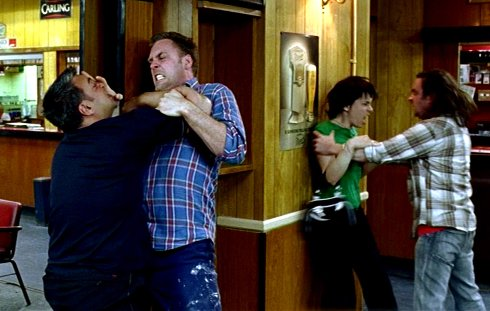
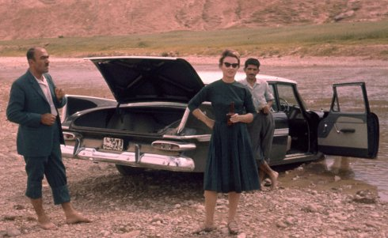
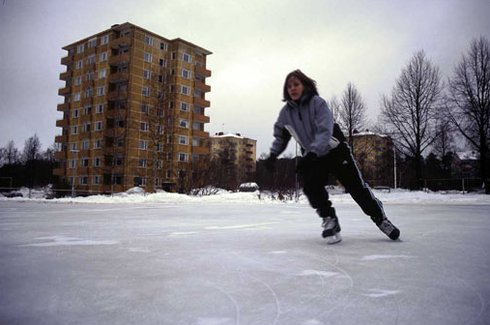

ARTIST IN FOCUS: MIRANDA PENNELL
donnerstag 8 juni 19 uhr filmmuseum münchenWebsite von Miranda Pennell (englisch)
Download Programmheft (PDF)
Line-up der Filme
I. choreographien der präsenz (1995-2007)
Die britische Künstlerin Miranda Pennell (*1963 in London) studierte zeitgenössischen Tanz in New York und Amsterdam und später visuelle Anthropologie in London. Beide Seiten, Körper und Theorie, vereinen sich in ihren Filmen und lassen die Wirklichkeit in rituellen Phänomenen gesellschaftlicher Gewohnheiten erkennbar werden. So das winterliche Schlittschuhlaufen einer Gruppe von Mädchen auf einem zugefrorenen See inmitten einer finnischen Stadt, das Gitarrenspiel heranwachsender Jungs in ihrem Jugendzimmer (MAGNETIC NORTH 2003), der Faustkampf zwischen (gecasteten) Hooligans in einem Londoner Pub (FISTICUFFS 2004) oder die Muster alltäglicher Bewegungen, die Pennell durch die Eingriffe des kinematographischen Dispositivs rhythmisiert, be- und entschleunigt (LOUNGE 1995).
Rituale der militärischen Welt und der größeren geopolitischen Zusammenhänge finden bereits 2001 in TATTOO die Aufmerksamkeit der Künstlerin, wenn sie die Exerzitien eines Regiments inmitten der unberührten Natur als absurden militärischen Drill zeigt, dessen einzige Zeugen die Vögel und Bäume sind.
II. film as an archive (ab 2010)
In ihren beiden jüngsten Arbeiten wendet sich Pennell von inszenierten Choreographien der Präsenz ab. Ihr Interesse gilt nun dem Nachwirken der britischen Kolonialzeit, und sie taucht als Forscherin in die Archive der eigenen Familie und der offiziellen Geschichtsschreibung ein. Historische Photographien, die sie wie Körper einsetzt, werden rhythmisiert und in neue Konfigurationen gebracht – eine choreographierte Vergangenheit, die neue Bezüge offenbart.

WHY COLONEL BUNNY WAS KILLED (2010) basiert auf den Tagebüchern
eines ihrer Ur-Väter während einer medizinischen Mission im
afghanischen Grenzgebiet und seziert die britische Selbstdarstellung
an der nordwestlichen Frontier von Indien.
THE HOST (2015) ist Pennells erster Langfilm und Bestandteil ihrer
Doktorarbeit "Film as an archive" am Arts Council England. Der Film
über die British Petrolium Company liest sich wie eine
kinematographische Forensik. Die geopolitische Historie,
dokumentiert in den Archiven der Ölgesellschaft, verwebt sie mit den
psychoanalytischen Schichten des Familienalbums. Ein detektivisches
Essay, das ins Zentrum der eigenen Familie führt.
UNDERDOX zeigt zur "halbzeit" eine Auswahl der filmischen
Arbeiten seit 1995 sowie die beiden jüngsten Werke.
Miranda Pennell ist zu Gast und präsentiert ihre Arbeiten in einer
Film Lecture.
Donnerstag, 8. Juni, 19 Uhr, Filmmuseum München
